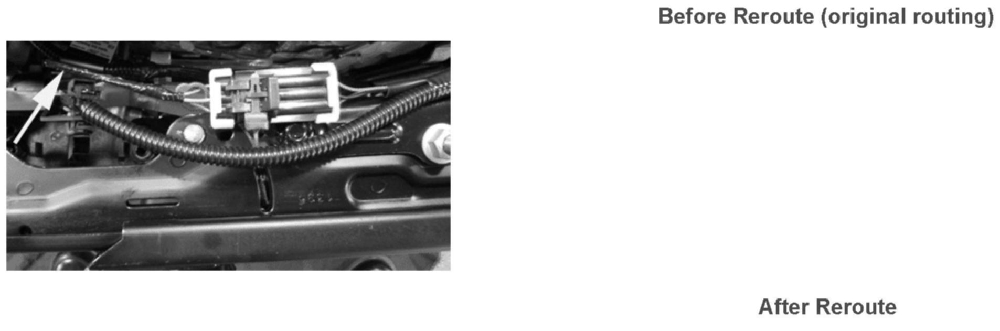
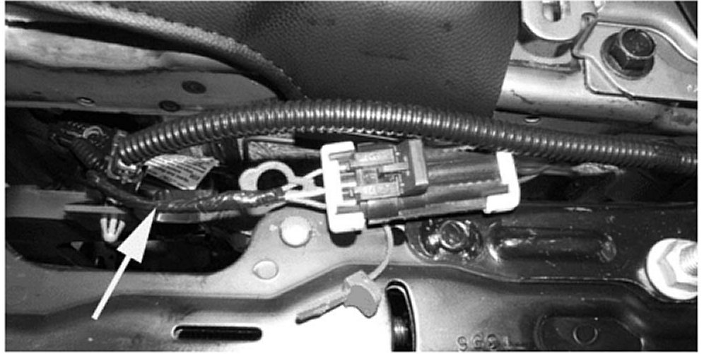
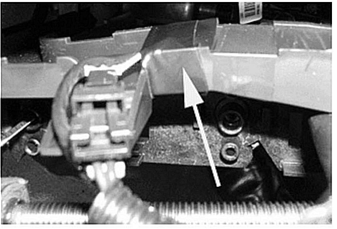
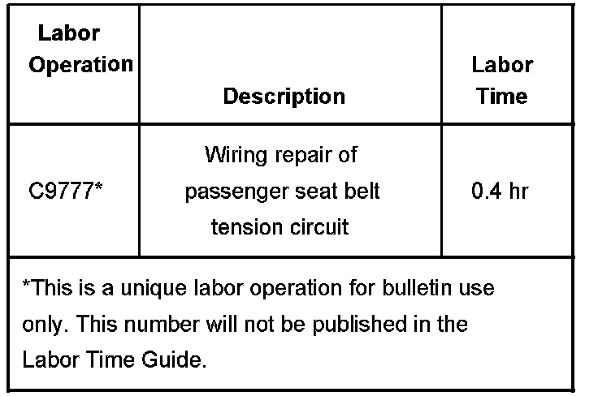

Restraints - SIR Lamp ON/DTC's B0071/B0081 Set
Bulletin No.: 06-09-41-007Date: November 09, 2006
TECHNICAL
Subject:
SIR Supplemental Inflatable Restraint Message, DTC B0081, B0071 Set, MIL Light On (Repair and Reroute Wiring as Necessary)
Models:
2007 Cadillac Escalade, Escalade ESV, Escalade EXT
2007 Chevrolet Avalanche, Suburban, Tahoe
2007 GMC Yukon, Yukon XL, Yukon Denali, Yukon Denali XL
with 10-Way Power Passenger Seat (RPO AG2)
Condition
Some customers may comment that the Supplemental Inflatable Restraint (SIR) MIL is displayed on the Instrument Panel Cluster. This concern can be intermittent and could occur while adjusting the passenger seat.
Cause
When checking for DTCs, the Sensing and Diagnostic Module (SDM) will have a B0081 and the Passenger Presence System (PPS) a B0071. A possible source of this condition is the seat belt tension sensor circuits 5611, 5612, and/or 5613 being crushed in the seat riser assembly near the seat belt buckle. These circuits are in a smooth black conduit and at first may appear to be OK, but if the conduit is cut open to expose the wires, the damage can be seen.
The area of concern is more easily seen if the seat is removed from the vehicle.
Correction


If there is damage to any of the wires of the seat harness then repair as necessary. If the damage is on the seat belt buckle pigtail, replace the buckle. In order to prevent any future wiring issues involving the seat belt tension sensor circuits, the wiring should be rerouted as pictured (refer to diagrams).
The seat belt tension sensor circuit has been rerouted so as to run underneath the black conduit.

Once you have rerouted the circuit, tape around the plastic channel in order to hold the wiring in the channel. Refer to diagram.
Warranty Information

For vehicles repaired under warranty, use the table.

Disclaimer